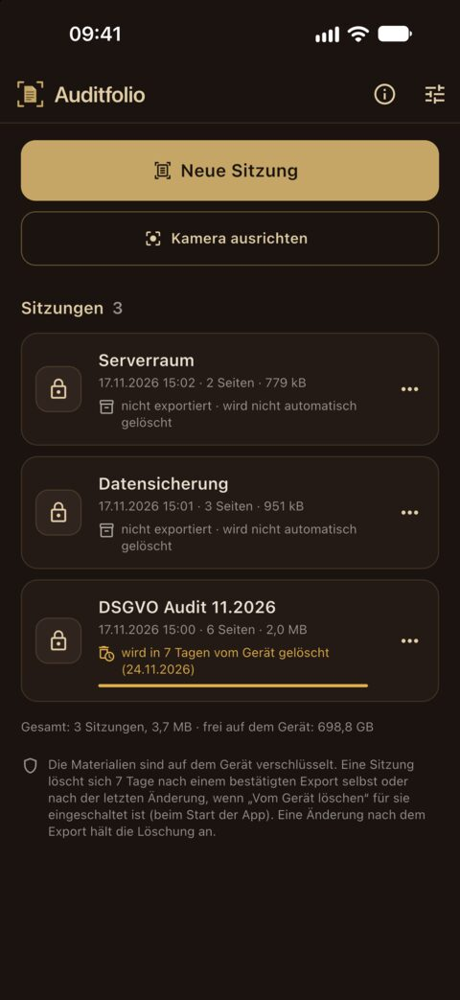
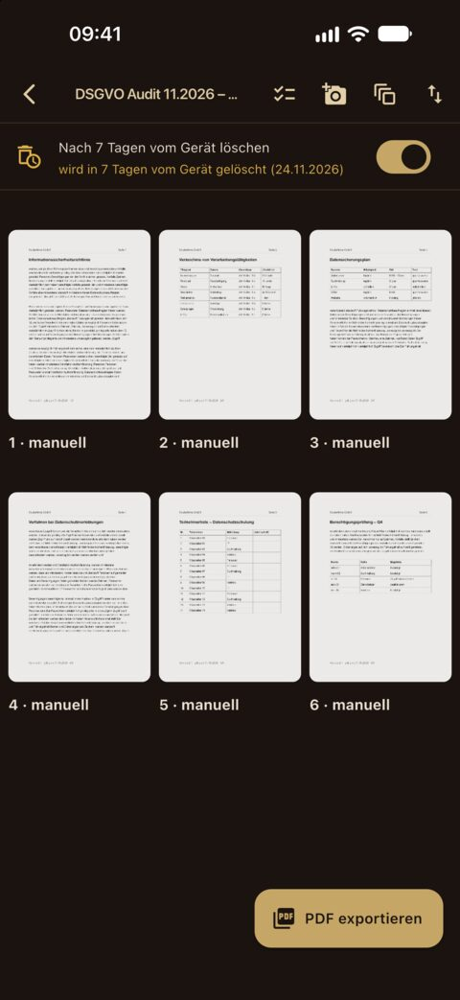
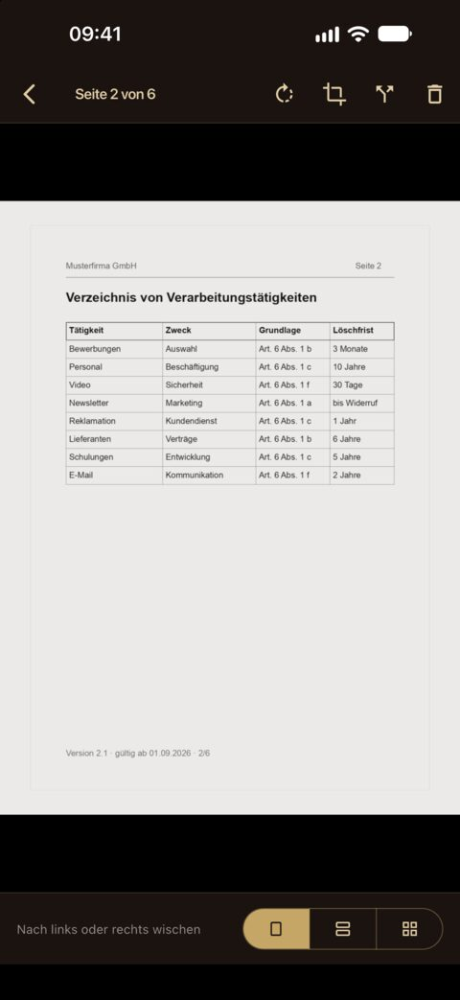
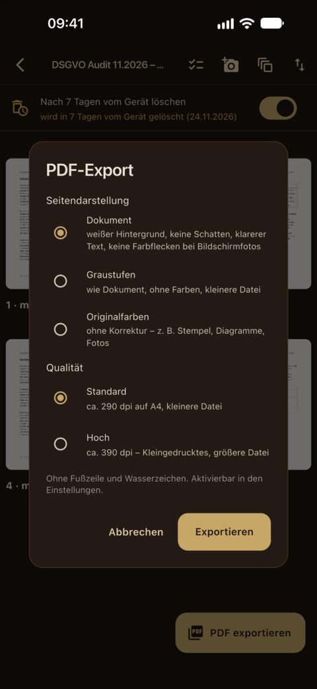

Bedienungsanleitung
Auditfolio sammelt Dokumente während eines Audits: Papierseiten und das, was Ihnen jemand auf einem Bildschirm zeigt. Die Fotos werden auf dem Gerät verschlüsselt, am Ende entsteht ein durchsuchbares PDF.
Bevor Sie beginnen
Vor dem ersten Foto fragt die App nach dem Kamerazugriff. Eine gespeicherte Sitzung öffnen Sie mit Face ID, Touch ID oder dem Gerätecode.
„Kamera ausrichten“ auf dem Startbildschirm hilft, Abstand und Licht zu finden. Die Anzeigen für Schärfe, Spiegelung, Dokument und Stillstand werden grün, wenn der Ausschnitt passt. Auf diesem Bildschirm wird nichts gespeichert.
Neue Sitzung
Tippen Sie auf „Neue Sitzung“ und geben Sie einen Namen ein, etwa Kunde und Datum. Der Name wird für den Dateinamen des PDF verwendet.
„Automatische Fotos“ legt fest, ob die App selbst auslöst. Ist die Option aus, fotografieren Sie nur mit der Taste „Manuell“. „Höchste Fotoqualität“ liefert mehr Details, jedes Foto dauert aber länger. Während der Aufnahme ändern Sie das mit der Taste „HQ“.

Fotografieren
Im Automatikmodus halten Sie das Telefon über das Dokument und blättern um. Die App wartet, bis das Bild ruhig und scharf ist, und bestätigt jede Aufnahme mit einem kurzen Aufblitzen samt Seitenzahl. Eine Seite, die der vorigen stark ähnelt, wird mit einer Markierung zur Prüfung gespeichert.
Ein Dokument auf einem Bildschirm scrollen Sie langsam, damit sich aufeinanderfolgende Fotos überlappen. Fehlt die Überlappung, zeigt die Übersicht eine mögliche Lücke.
Unten finden Sie „Pause“, „Manuell“ und „Beenden“ sowie den Schalter „Auto“. „Seite erkennen“ berechnet den Dokumentrahmen neu, zum Beispiel nach dem Wechsel auf ein kleineres Blatt.
Tipps: Papierdokumente
Legen Sie das Blatt auf eine dunkle, matte Unterlage oder Mappe. Mit gutem Kontrast zum Hintergrund findet die App die Seitenränder zuverlässiger.
Am besten ist diffuses Licht von oben oder von der Seite. Vermeiden Sie eine Lampe direkt über dem Blatt, sonst werfen Telefon und Hand einen Schatten. Nehmen Sie Blätter aus Klarsichthüllen und fotografieren Sie Glanzpapier nicht unter einer Lampe – Spiegelungen verdecken den Text. Die Spiegelungsanzeige unter „Kamera ausrichten“ zeigt, ob der Platz passt.
Halten Sie das Telefon parallel zum Blatt, sodass die ganze Seite mit etwas Rand ins Bild passt. Bei vielen Seiten stützen Sie die Ellbogen auf den Tisch oder nutzen eine Halterung und legen jedes Blatt an dieselbe Stelle – den Rest erledigt der Automatikmodus.
Geheftete oder gebundene Unterlagen drücken Sie am Rücken flach, denn eine gewölbte Seite macht den Text am Rand unscharf. Für Kleingedrucktes schalten Sie „HQ“ ein, und wenn farbige Stempel und Unterschriften zählen, wählen Sie beim Export „Originalfarben“.
Tipps: Bildschirme
Bitten Sie die auditierte Organisation vorab, unnötige Fenster zu schließen und Benachrichtigungen stummzuschalten. Auf dem Foto sollte nur das vereinbarte Material zu sehen sein.
Vergrößern Sie das Dokument auf dem Bildschirm (z. B. auf 125–150 %) und maximieren Sie das Fenster. Größerer Text wird besser erkannt, und das Telefon muss nicht nah an den Monitor.
Halten Sie das Telefon gerade vor den Bildschirm und parallel dazu. Schräg gehalten verliert der Text an den Rändern an Schärfe. Zeigt die Vorschau farbige Streifen (Moiré), gehen Sie ein paar Zentimeter näher oder weiter weg oder drehen das Telefon leicht.
Spiegelungen von Fenstern und Lampen beseitigen Sie, indem Sie den Monitor anders neigen oder das Licht hinter sich ausschalten. Einen sehr hellen Monitor dimmen Sie auf mittlere Helligkeit. Ein Dokument im hellen Design, dunkler Text auf Weiß, ergibt ein saubereres PDF.
Scrollen Sie langsam, mit Überlappung zwischen den Fotos. Beim Export entfernt die Darstellung „Dokument“ die Farbflecken, die bei Bildschirmfotos typisch sind.
Seiten prüfen
Nach „Beenden“ sehen Sie Miniaturen. Unter einer Miniatur stehen Hinweise wie „ähnlich wie die vorherige“, „eventuell unscharf“ oder eine fehlende Überlappung.
Tippen Sie eine Seite an, um sie zu vergrößern. Dort können Sie sie drehen, den Zuschnitt korrigieren (Ecken, „Automatisch“ oder „Ganzes Foto“), ab ihr ein neues Dokument beginnen oder sie löschen. Ein neues Dokument bedeutet, dass der Export eine eigene PDF-Datei erstellt.
In der oberen Leiste: mehrere Seiten zum Löschen auswählen, „Seiten hinzufügen“ (Kamera im manuellen Modus), „Wiederholungen finden“ und „Seitenreihenfolge“, wo Sie eine Seite gedrückt halten und an eine neue Stelle ziehen.


PDF exportieren
Tippen Sie auf „PDF exportieren“ und wählen Sie die Darstellung: „Dokument“ (weißer Hintergrund, klarer Text), „Graustufen“ oder „Originalfarben“, wenn Stempel, Diagramme oder Fotos wichtig sind. Standardqualität sind etwa 290 dpi auf A4, hohe Qualität etwa 390 dpi.
Das PDF erhält eine unsichtbare Textebene, erkannt auf dem Gerät (Polnisch und Englisch), und ist damit durchsuchbar. Die Datei speichern oder senden Sie über das Teilen-Menü des Systems, zum Beispiel „In Dateien sichern“.
Nach dem Speichern fragt die App, ob Sie das PDF geprüft haben. Erst diese Bestätigung startet die Frist bis zum Löschen der Sitzung vom Telefon.
In den „Einstellungen“ aktivieren Sie die PDF-Verschlüsselung mit Zufallspasswort, eine Fußzeile mit Sitzungsname, Seitenzahl und Datum sowie ein Wasserzeichen. Das Passwort sehen Sie in der Sitzung und im Menü ⋯ der Sitzungsliste. Geben Sie es auf einem anderen Weg weiter als die Datei, etwa per SMS.

Speicherung und Löschen
Fotos und Sitzungsnamen sind auf dem Gerät verschlüsselt. Sie gelangen weder in die Fotomediathek noch in die iCloud-Sicherung.
Nach einem bestätigten Export löscht sich eine Sitzung nach 7 Tagen selbst vom Telefon. Der Schalter „Nach 7 Tagen vom Gerät löschen“ in der Sitzungsübersicht bewirkt dasselbe auch ohne Export; die Frist läuft dann ab der letzten Änderung. Jede Änderung nach dem Export hält das Löschen an.
Die Sitzungsliste zeigt, wann welche Sitzung verschwindet. Über das Menü ⋯ in der Liste löschen Sie eine Sitzung sofort. Exportierte PDF-Dateien bleiben dort, wo Sie sie gespeichert haben.
Auditnachweise
ISO 19011 versteht unter Auditnachweisen Aufzeichnungen, Tatsachenfeststellungen oder andere Informationen, die für die Auditkriterien relevant und verifizierbar sind. Ein Foto der Seite zeigt später, worauf eine Feststellung beruht, statt sie aus dem Gedächtnis zu rekonstruieren.
Stimmen Sie bei der Auditplanung mit der auditierten Organisation ab, dass Dokumente und Bildschirme fotografiert werden dürfen. Benennen Sie die Sitzung eindeutig und aktivieren Sie beim Export die Fußzeile mit Sitzungsname, Seitenzahl und Datum.
Beispielformulierung für den Auditplan: „Mit Zustimmung der auditierten Organisation darf der Auditor vorgelegte Dokumente und Bildschirme ausschließlich zur Dokumentation von Auditnachweisen fotografieren. Die Fotos werden verschlüsselt gespeichert, sind nur dem Auditteam zugänglich und werden vom Gerät gelöscht, sobald sie in der Auditakte liegen. Die auditierte Organisation kann bestimmte Unterlagen vom Fotografieren ausnehmen.“ Bestätigen Sie dies im Eröffnungsgespräch.
Dieselbe Norm empfiehlt Auditoren Diskretion und den Schutz der im Audit gewonnenen Informationen. Deshalb sind die Fotos verschlüsselt, gelangen nicht in die Cloud, und die Sitzung kann sich vom Telefon löschen, sobald das PDF in der Auditakte liegt.
Fehler melden oder Idee vorschlagen
Schreiben Sie an die Adresse unten. Bei einem Fehler nennen Sie bitte Gerätemodell, iOS-Version, App-Version (Bildschirm „Info“) und die Schritte, die dazu führen.
Hängen Sie keine Fotos von Dokumenten und keine personenbezogenen Daten an. Wenn ein Bildschirmfoto hilft, erstellen Sie es mit einem Beispieldokument.